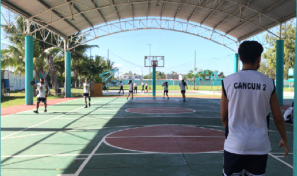
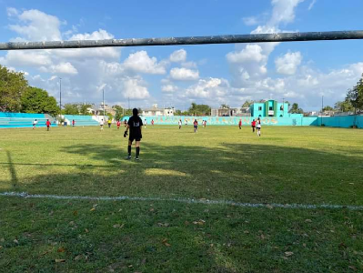
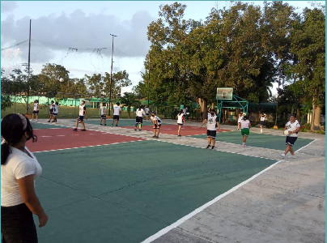
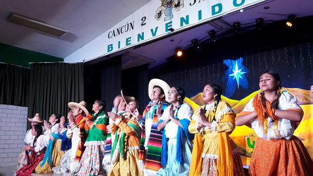
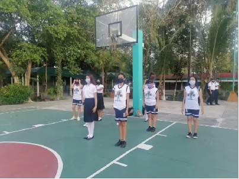

BASQUETBOL
¿QUÉ SE HACE EN ESTE PARAESCOLAR?
El nombre de la profesora que se encarga de dar las clases del paraescolar de basquetbol es Norma Hortensia Corona Sánchez
El basquetbol es un tipo de deporte en equipo que se puede desarrollar tanto en pista cubierta como en descubierta, en el que dos conjuntos de cinco jugadores cada uno, intenta anotar puntos, también llamados canastas o dobles y/o triples introduciendo un balón en un arco colocado a 3,05 metros del suelo del que se cuelga una red
Lo que se hace en este paraescolar de basquetbol es que la profesora nos enseña algunos movimientos básicos del basquetbol, también nos pone a investigar acerca del paraescolar de basquetbol y sus reglas, esto con el fin de tener una idea de cómo es este deporte y al momento de llevarlo a la práctica presencial no estemos comenzando de cero
FUTBOL
¿QUÉ SE REALIZAN?
El profesor de futbol se llama José May y ha sido maestro por bastante tiempo.
Se ingresa a la escuela con el uniforme correspondiente, después se llega a la instalación donde se encuentra el campo, primeramente el profesor pasa lista, despues calentamos y procedemos a hacer ejercicios para seguir calentando, terminando los ejercicios nos dividimos en equipos y nos ponemos a jugar un breve partido o también se juegan “saca reta”, que consisten en que el partido dura aproximadamente 5 minutos y dos equipos se enfrentan y el que pierda sale y entra otro equipo, en caso de que ninguno de los dos equipos meta gol, se saldrán del campo ambos equipos y entraran otros dos.
EL SELECTIVO
También en la parte de fútbol está un equipo aparte que es el paraescolar, esta se llama selectivo en la cual se seleccionan de la siguiente manera: el profe hace la invitación general a los que quieran entrar, entonces llegan se hace un mini partido donde el profe los ve jugar y él mismo los selecciona en base a cómo juegan, físico y mentalmente etc. Cuando termina el partido el profe dice quienes se quedan, de ahí ese equipo tiene que ir los lunes y jueves ya que es entrenamiento y este sirve a que cada año se lleva a cabo un torneo entre los paraescolares de futbol de otros colegios. Se lleva a cabo el torneo y el ganador de ese torneo se va a las estatales donde ya participan otras prepas del municipio.
VOLEIBOL
¿QUÉ SE REALIZAN?
En el paraescolar de voleibol el profesor a cargo se llama Geovanny Edson George Barranco García.
En la clase se realizan diversos ejercicios como calentamiento en las piernas y brazos para fortalecer: Trotan, Corren, Realizan zancadas, Saltos de lado, Volean, Practican golpes bajo
Todo eso se suele realizar en las canchas especificas de voleibol. Y lo que practican durante la hora es ejercicios de como pegar el balón, las posiciones de cada ejercicio y saques.
Durante que los alumnos realizan los ejercicios el profesor Geovanny enseña cosas teóricas práctica el nombre de las líneas que conforman la cancha de voleibol, como acomodar las manos al momento de hacer golpe bajo entre más.
Danza

La danza es la ejecución de movimientos corporales al ritmo de la música que permite expresar sentimientos y emociones. La danza fue una de las primeras manifestaciones artísticas de la humanidad.
El paraescolar de danza es impartido por el docente Miguel Ángel Pozos Gamino y da clases únicamente viernes y sábado. Se llevan a cabo en un especie de domo pequeño para ensayar coreografías. Este para escolar al menos en el grupo de cuarto semestre cuenta únicamente con 14 alumnos.
En el Colegio de Bachilleres Plantel Cancún Dos, específicamente en la parte del estacionamiento, por el lado de la reja está el aula de artes plásticas, música y pintura. Al lado de esa aula hay un domo pequeño con mosaicos naranjas, que es donde se llevan a cabo las clases de este para escolar. El lugar es fácil de reconocer, ya que al lado hay unas mesas.
Durante el día puedes ver alumnos y maestro ensayando coreografías. Aunque cabe mencionar que en el mismo domo se llevan a cabo las clases del para escolar de pintura.
ESCOLTA
¿Qué es?
La escolta escolar es un grupo de alumnos elegidos en el plantel de Bachilleres Cancún Dos, producto de su brillante aprovechamiento académico, que tienen la responsabilidad de realizar en conjunto marchas y evoluciones; con el objetivo de resguardar, cuidar y proteger a la bandera nacional durante los desfiles, izamientos, arriamientos y otros actos en su honor.
El paraescolar de escolta en el plantel de Bachilleres está conformado por aproximadamente 17 alumnos y el maestro Agustín Canul Verde, quien dirige las clases presenciales de la escolta.
Plan de aprendizaje
Su plan de aprendizaje es muy sencillo pero elaborado, el cual consta de estos puntos puntos: -El profesor deberá escoger las formas y procedimientos más adecuados para preparar correctamente a la escolta, apegándose a la ley sobre el Escudo, Bandera y los Himnos Nacionales. -Es preciso que el instructor proceda a la preparación de la escolta, siguiendo un orden progresivo y siempre de lo fácil a lo difícil, cambiando de un ejercicio a otro, cuando se considere pertinente es conveniente exigir una gran atención y ejecución precisa de los movimientos.